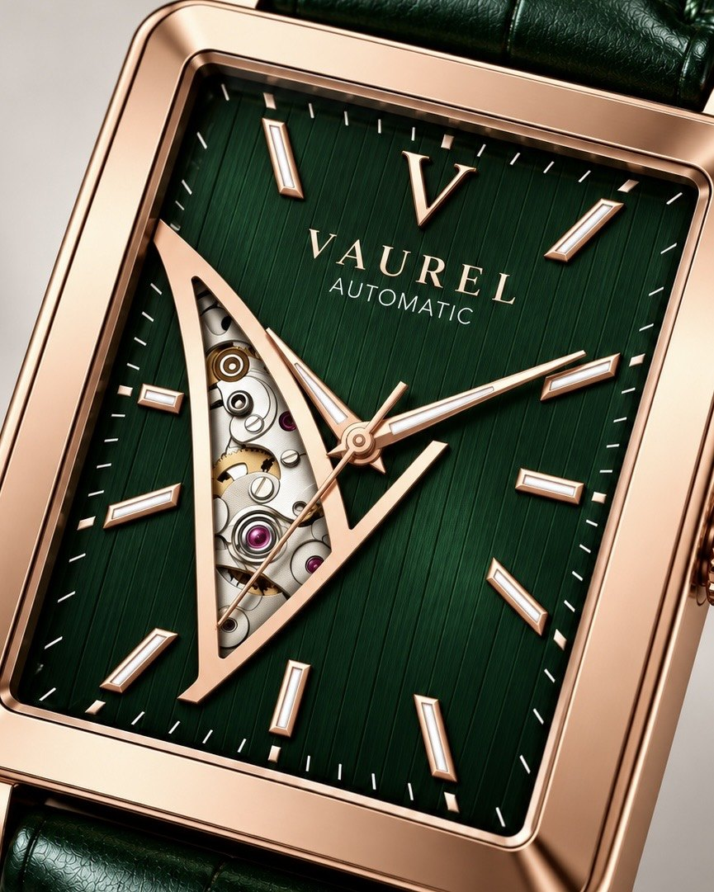

Time, refined.
Automatic watches with a signature open V that reveals the movement at work. Classic on the outside, quietly remarkable within.

It began with a single line.
Vaurel started as a sketch: one sharp V drawn across the face of a watch. Not a logo printed on the dial, but a window cut into it, so the heart of the watch would be in view every time you checked the time.
That line became our signature. Every Vaurel pairs a clean rectangular case with an open V that frames the automatic movement beneath, wound by the motion of your wrist instead of a battery. Nothing loud, nothing unnecessary: just honest mechanics and a design made to be worn for years.
Read MoreSignature Pieces
“Time, in a higher form.” The Vaurel Philosophy
The Open V
A window cut into every dial reveals the movement turning inside, the signature of every Vaurel.
Automatic Movement
Powered by the natural motion of your wrist. No battery to replace, just mechanics you can see.
Timeless Design
A rectangular case inspired by classic dress watches, in polished stainless steel or a warm rose gold tone, on genuine leather.
Find your Vaurel.
Questions about a watch, sizing or your pre-order? Write to us and we will reply personally.
Get in Touch